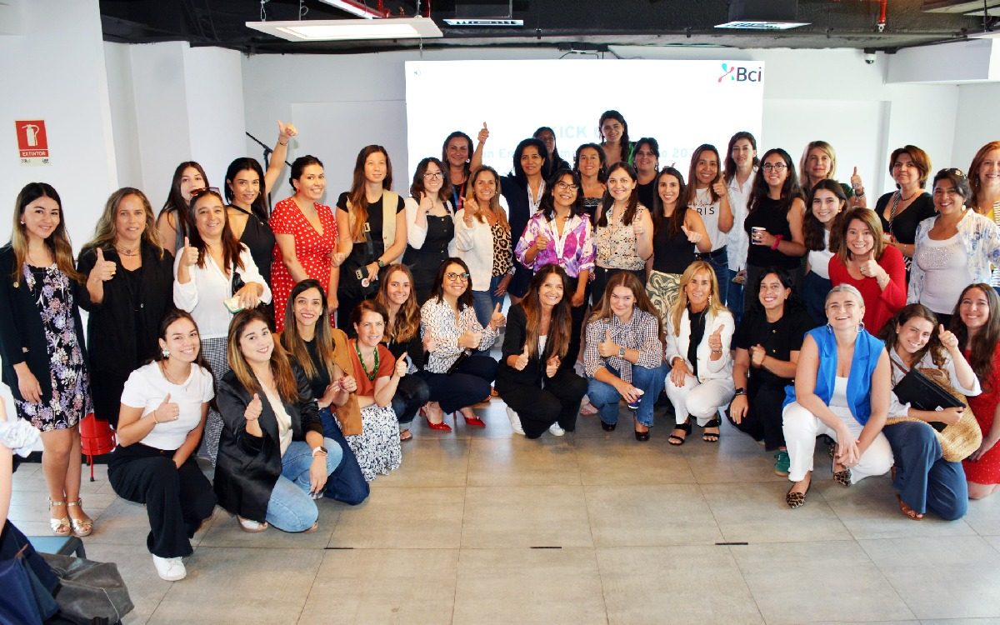
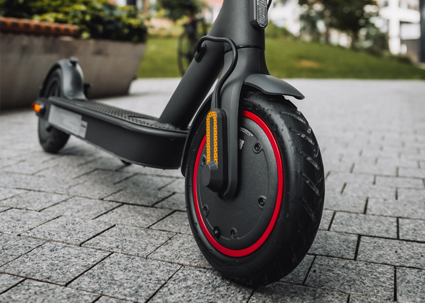
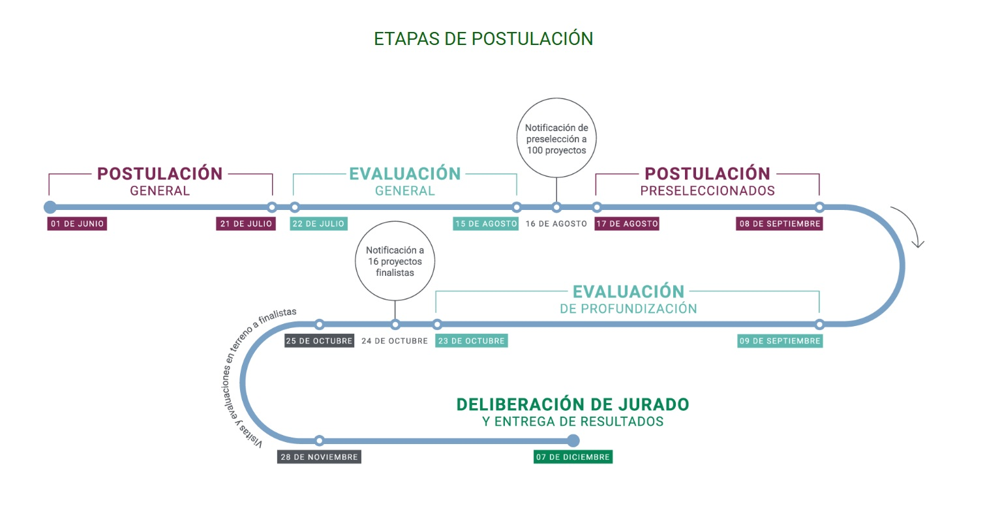

BCI lanza plan para potenciar el emprendimiento femenino enfocado en sostenibilidad
Fecha: Marzo 13, 2025

El Banco de Crédito e Inversiones (BCI) ha anunciado una innovadora iniciativa destinada a impulsar proyectos empresariales liderados por mujeres que tengan un enfoque en la sostenibilidad y el impacto ambiental positivo.
Características del programa:
- Financiamiento preferencial para proyectos sostenibles
- Mentorías especializadas en gestión empresarial
- Red de contactos y apoyo entre emprendedoras
- Workshops sobre sostenibilidad y negocios verdes
El programa busca cerrar la brecha de género en el emprendimiento mientras promueve prácticas empresariales sostenibles.
Smart Me: el emprendimiento que apuesta por la electromovilidad
Fecha: Abril 09, 2021

Smart Me, una startup chilena, está revolucionando el mercado de la movilidad eléctrica con soluciones innovadoras y accesibles para el transporte urbano.
Aspectos destacados de la empresa:
- Desarrollo de scooters eléctricos de bajo costo
- Red de estaciones de carga solar
- Sistema de compartición de vehículos eléctricos
- Tecnología de geolocalización y gestión de flota
La empresa proyecta expandirse a otras ciudades de Latinoamérica en los próximos meses.
Lanzan fondo concursable para apoyar económicamente a proyectos colaborativos y comunitarios
Fecha: Mayo 06, 2021

Una nueva iniciativa busca fortalecer el desarrollo local a través del apoyo financiero a proyectos que fomenten la colaboración y el desarrollo comunitario.
Detalles del fondo:
- Financiamiento de hasta $10 millones por proyecto
- Enfoque en iniciativas de impacto social
- Prioridad a proyectos sostenibles
- Apoyo técnico durante la implementación
Las postulaciones están abiertas hasta el 30 de junio de 2025 y se espera beneficiar a más de 50 proyectos en todo el país.